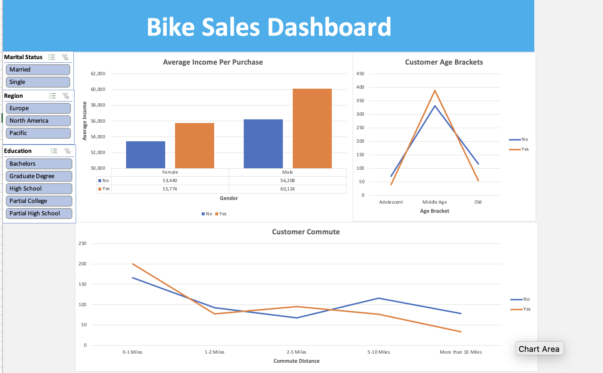
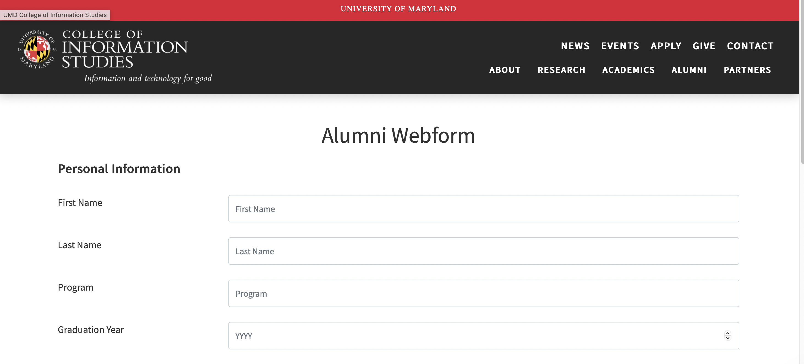
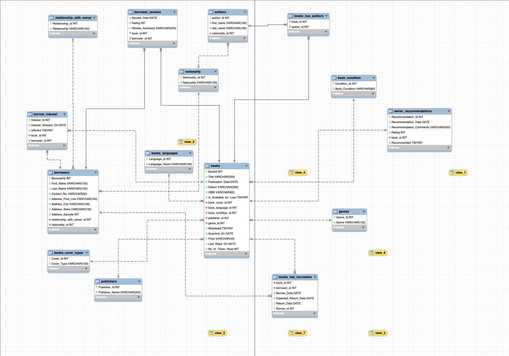

Hi, I'm a graduate student from the Master of Information Management program at the University of Maryland, College Park. I am proficient in tools such as SQL, Tableau, Python, MS Excel, Applied Statistics and Statistical Testing.
Presently, I am also working as a Teaching Assistant for two undergraduate courses -
INST327: Database Design and Modeling and INST314: Statistics for Information Science.
You can take a look at some of the projects I've worked on so far down below.
The import of this project is to determine whether ticket class, gender or port of embarkation
were statistically significant predictors of surviving the titanic, given the socioeconomic disparity in the past

In this project, we observe the visualizations which represent the number of times a CSGO team was
able to make a comeback and win a map specifically if they were trailing by at least 11 rounds in the first half

In this dashboard, we can observe the different facts regarding the sales of bikes and the quantity of people using them in different regions belonging from various different educational backgrounds.

The Master of Information Management (MIM) program at the iSchool of the University of Maryland required a system to collect contact information from alumni along with their areas of interest in volunteering. These areas of interest include mentoring, mock interviews, alumni panels and resume review sessions. In addition to providing functionality for the alumni to submit this information, it also required a web front-end for the faculty to query information on the alumni interest areas and contact information.

The
database will assist book lovers in managing various book-related tasks, namely keeping track of
books they own, maintaining a history of book purchases, and managing a book review diary.
Additionally, it makes it easier to keep track of who has borrowed their books.